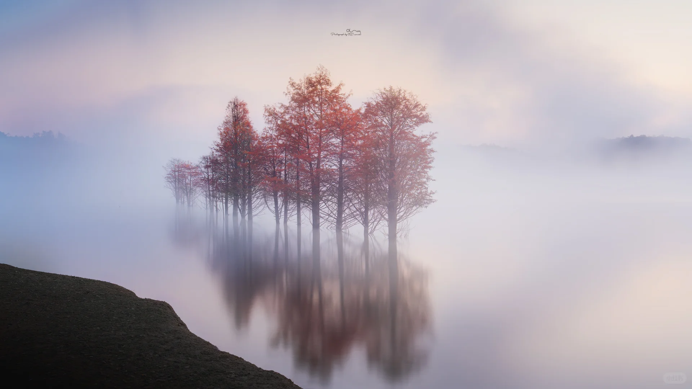
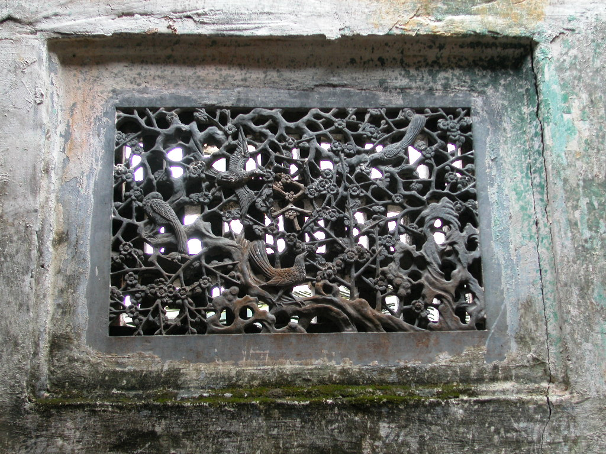
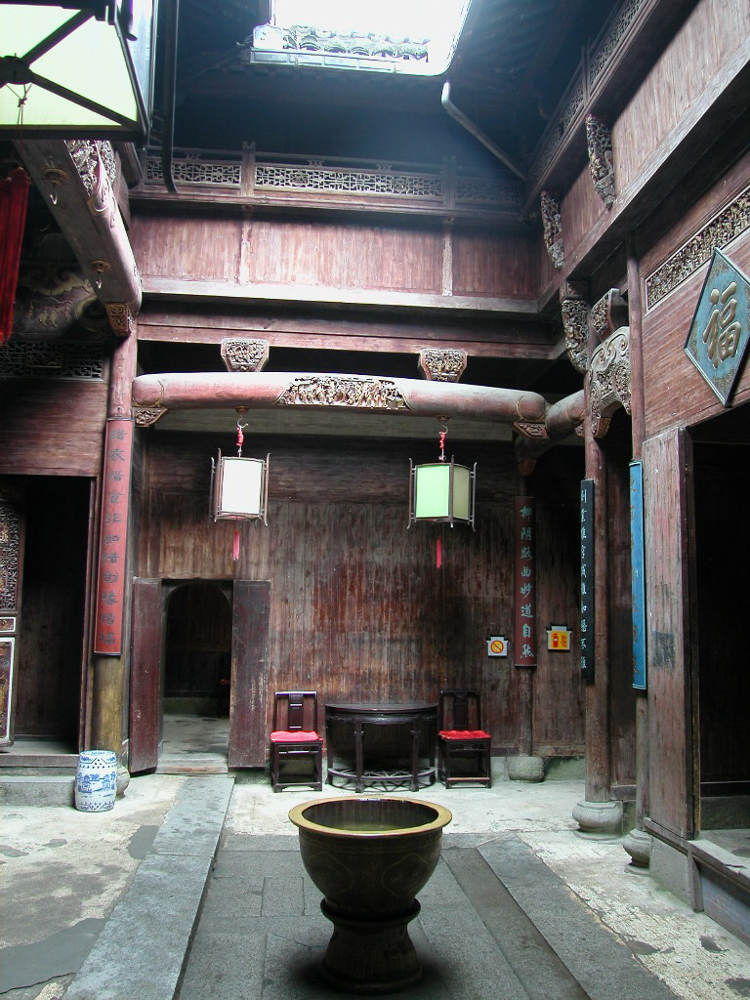

泾县县城周边
长途抵达先休整
花筑·聚善堂民宿
（宣城泾县皖南川藏线店）
¥400—600 / 间 / 晚 · 预算
携程具体页列私人停车场、充电车位，位于泾川镇江梓村一带。县城吃饭、补能后入住，第二天白天进山。
公开页标14:00后入住；确认晚到接待、停车入口、充电类型。若偏好标准酒店，可在县城筛选停车方便且近期评价稳定的门店。
四天，沿着山路去找秋天。
方塘的一排红杉，储家滩的一层晨雾。
住在下一次早起附近，
把好光、吃饭和睡眠都排进路书。

以请周四、周五，连周末共四天安排。默认B方案沿川藏线西进东出，泾县、方塘、储家滩各住一晚；A侧重古村与醉美218，C提供四天双线组合。三天压缩版保留，供假期变化时切换。
塔川公开预报的最佳窗口是11.11—26；宁国文旅按往年规律推荐红杉林11月中下旬至12月上旬。两种秋色的节奏稍有不同。[01] [19]
11月19日周四出发，11月22日周日返程。
方塘参考 · 日出约06:35 / 日落约17:07
时间采用北京时间，上方是所选周六的参考时间，每日地图另列当天机位的日出日落。晨拍建议提前30—40分钟到位；山里见光可能更晚，前一天先踩点。
先选一条线，再按天查看怎么走。地图、行程、住宿与电车预算一起切换，机位旁边就能核对成片与入口。
武汉 → 泾县 → 月亮湾 → 桃岭 → 板桥 → 方塘 → 储家滩 → 宁国 → 武汉
方塘红杉与倒影 / 储家滩晨雾 / 桃岭公路 / 竹海溪流
地图加载中，路线与机位可先查看。
点击地图数字或列表，在这里查看成片与正式入口。
地图用来看沿途山水与路线。出发前把实际住处和停车场设为导航终点，现场入口与实时路况以导航为准。
| 路线 | 最值得拍什么 | 四天如何分配 |
|---|---|---|
| 皖南川藏线 | 红杉水面、库湾晨雾、桃岭盘山公路与竹海。官方宁国精华段约80 km，整条东西向线路常称约120 km；本次含县城出入的拍摄路线里程更长。[20] | B方案西进东出；泾县、方塘、储家滩各住一晚。 |
| 醉美218＋古村 | 塔川乌桕、卢村屋顶、郭村与焦村田野。旧S218部分改为G530，甘棠—渔亭经典线路约85 km。[28] | A方案宏村两晚，甘棠或太平湖一晚。 |
| 古村—218—川藏线 | 一组徽州古村与一组水上彩林。保留两种题材的核心机位，减少室内游览和游船。 | C每晚换片区；最后一天约590 km，适合接受更长转场的人。 |
| 泾县乡野支线 | 查济古建筑、桃花潭与汀溪竹林。可替换B方案一段停留，按当天光线与体力选一处。地方三日游参考 | 想慢拍查济可另做一趟四天；本路书不额外安排整条支线。 |
| 方胡路—胡乐老街 | 难翻岭盘山公路、古桥与徽派老街。11.05宁国文旅介绍这条当地支线，入口、路况与停车需分段核对。[37] | 可替换B一段停留；希望慢拍古桥与老街时，给它单独一天，不继续加在返程上午。 |
起止时间是日程预算，包含补能、停车与休息。清晨转场按所订住处倒推出门时间；山路以白天通行为主。好光出现时少换点，晚到或疲劳时删掉可选项。
四天主推B方案，三晚住在下一次晨拍附近。
| 时间 | 地点 / 行动 | 拍摄与安排 | 执行提示 |
|---|---|---|---|
| 07:00 | 武汉出发 | 早餐后出发，电量约90%；按实时路线选择顺行充电站。 | 途中约479 km路网示例，按500 km量级预留 |
| 09:00—14:30 | 补能、午饭与休息 | 每1.5—2小时停车活动；把一段充电与午饭合并。先看下一站预计到站电量。 | 充电每次先留30—45分钟，排队另计 |
| 15:30—17:00 | 入住与县城轻走 | 先办理入住、补能和明天路线确认。到得早可散步拍生活细节，晚到就直接休息。 | 不再驶入桃岭山路 |
| 17:30—20:30 | 泾县晚餐，整理器材 | 选泾县焖面、渣肉或土菜；确认第二晚方塘停车入口。备份后早点睡。 | 次日早餐备一份可带走的 |
| 时间 | 地点 / 行动 | 拍摄与安排 | 执行提示 |
|---|---|---|---|
| 06:30—07:30 | 早餐，转场月亮湾 | 县城早餐可选205面、锅贴或大饼。驶到蔡村月亮湾正式停车区域。 | 地图用月亮湾村作参考定位 |
| 07:30—09:15 | 月亮湾溪流与竹海 | 拍竹林倒影、河湾与石块，水面不平静时找局部。 | 看机位11 / 24—70 mm、CPL 展开对应机位 |
| 09:30—12:30 | 桃岭盘山公路 | 分段导航六道湾观景台；正式停车后从平台拍公路弧线，给会车和停拍留时间。 | 看机位12 / 不在弯道车道内拍照 展开对应机位 |
| 12:30—14:30 | 板桥午饭，继续方塘 | 点笋干烧肉、时蔬或土鸡；补能在入山前或已确认的村站完成。 | 下午光线更好时才增加停拍 |
| 15:00—17:00 | 方塘入住与湖岸踩点 | 先放行李，再走一遍住处到方塘星空露营基地停车点及售票处附近岸线。记下车程、步行与明早进入方式。 | 看机位09 / 住处与岸边分别定位 展开对应机位 |
| 18:00—21:00 | 湖鱼晚餐，备份与休息 | 鱼头豆腐煲配时蔬即可。确认早餐供应时间，备少量易携带食物和热饮；备份后早点睡。 | 按次日06:00到位倒推出门时间 |
| 时间 | 地点 / 行动 | 拍摄与安排 | 执行提示 |
|---|---|---|---|
| 05:15—06:00 | 晨拍转场，先垫一口 | 按前晚走过的路线去营地停车点，再步行到岸边。把车程、停车与步行合起来，以06:00到位倒推出门时间。 | 此转场窗口为示例，按所订住处调整 |
| 06:00—08:15 | 方塘一排树与水面晨雾 | 先拍岸边静态倒影；日出后有侧光再考虑航拍。无雾就拍树列、留白和反光。 | 看机位09 / 成片与找点图可对照 展开对应机位 |
| 08:15—09:15 | 收器材、回住处吃早餐 | 按前晚确认的开餐时间吃热饭；若住营地，其公开早餐时段为08:30—09:30。收拾好行李，再决定上午加什么。 | 早餐时段未确认时，先用已备的食物 |
| 09:15—11:00 | 红杉观景点或可选游船 | 选正规游船、竹筏前先核时段和价格。好雾值得多等时，延长晨拍、删去游船。 | 游船可删，退房、午饭与午休保留 |
| 11:00—12:30 | 方塘退房，附近午饭 | 取齐行李后办理退房，再就近吃午饭。午休放在储家滩当晚住处。 | 晨拍延长时删游船，保留退房和饭点 |
| 12:30—14:00 | 青龙湾方向转场，储家滩入住 | 沿宁泾路向储家滩走，到店放行李。想停观湖驿站时，只选顺路正式停车点。 | 青龙湾地图点是风景区参考中心 |
| 14:00—15:30 | 午休、备份与补能 | 在储家滩当晚住处休息一段，备份早晨素材；有已确认充电条件时，把补能一起完成。 | 房间午休保留，晚光15:30再出门 |
| 15:30—17:20 | 储家滩晚光与湖山 | 先踩明早岸边位置，再拍山体倒影、船与层叠远山。 | 看机位10 / 70—200 mm 展开对应机位 |
| 18:00—21:00 | 民宿餐厅，补电休息 | 点青龙湖鱼头煲或红烧黑猪肉，配一道清淡菜。确认夜间慢充条件。 | 明天见公开页列停车与慢充设施 |
| 时间 | 地点 / 行动 | 拍摄与安排 | 执行提示 |
|---|---|---|---|
| 06:20—07:50 | 储家滩晨景 | 岸边拍雾、船与山的层次。竹筏是否运营、是否能约早班，前一晚与正规经营者核实。 | 看机位10 / 不以必有雾作为出行条件 展开对应机位 |
| 07:50—08:20 | 收器材，回店取行李 | 沿前晚确认的岸线返回；行李与大部分素材前一晚整理好，今晨只收随身器材。 | 回店耗时按实际机位调整 |
| 08:20—09:00 | 热早餐、退房与返程 | 明天见公开早餐07:00—09:00，目标08:20—08:45吃完。确认电量与返程首站，09:00左右开始返程。 | 宁国方向补能需匹配实际车机路线 |
| 12:00—16:00 | 午饭与两段休息 | 按电量补能，每1.5—2小时安排短休息。 | 不再增加老街或景区绕行 |
| 18:30—19:30 | 武汉抵达目标 | 这是正常路况、常规快充下的规划窗口；堵车或低温续航下降会顺延。 | 疲劳时提前停靠，抵达时间不作保证 |
| 时间 | 地点 / 行动 | 拍摄与安排 | 执行提示 |
|---|---|---|---|
| 06:30—15:30 | 离汉、途中补能、入住 | 把午饭与充电合并；到店先放行李，确认停车与次日早入规则。 | 晚到直接吃饭休息 |
| 16:00—17:00 | 协里或宏村外围田野 | 距住处近、还有精神时再拍侧光田野与树列。 | 机位03 / 可删 展开对应机位 |
| 18:00—21:00 | 徽菜晚餐，器材整理 | 臭鳜鱼、毛豆腐或笋干烧肉，选两三样即可。 | 连续两晚住同一家 |
| 时间 | 地点 / 行动 | 拍摄与安排 | 执行提示 |
|---|---|---|---|
| 06:00—09:00 | 塔川全景与村内古树 | 先在已确认开放的观景区域拍村落，再入村拍侧逆光大树。 | 机位01、02 / 原帖图1、图6 展开对应机位 |
| 09:00—12:00 | 早餐、宏村老宅 | 到宏村后以正常检票时间入园，午间拍天井与木构。 | 机位08 / 暗室亮窗可包围曝光 展开对应机位 |
| 12:00—15:00 | 午饭与休息 | 回住处备份并补能；留一段真正的午休。 | 不把每个村都塞进同一天 |
| 15:30—17:40 | 南湖、月沼或协里 | 选择一组晚光主题。若拍月沼蓝调，提前确认傍晚入园与出园条件。 | 机位05、06；只选一个晚景主点 展开对应机位 |
| 时间 | 地点 / 行动 | 拍摄与安排 | 执行提示 |
|---|---|---|---|
| 06:00—08:15 | 卢村观景台 | 用屋顶与远山做三层关系；原帖图2、7给出平台名称。 | 机位04 / 长焦局部与前景框景 展开对应机位 |
| 08:30—12:30 | 郭村—焦村风景道 | 早餐后北上，遇到开放停车点再停拍田野、村落与路弯。 | 分段导航郭村、焦村；别停急弯 |
| 12:30—15:00 | 甘棠午饭、入住与休息 | 确认第三晚住甘棠还是太平湖；县城补能后再去湖边。 | 湖景房与景区入口不是同一位置 |
| 15:30—17:00 | 太平湖开放湖岸 | 低太阳角度拍湖面、岛屿和小船，水面大风则截取山体。 | 以现场开放岸线为准 |
| 时间 | 地点 / 行动 | 拍摄与安排 | 执行提示 |
|---|---|---|---|
| 07:00—08:30 | 太平湖短拍或睡到早餐 | 今天不强求再抢日出；保持精神更利于回程。 | 湖景可删，早餐与退房优先 |
| 09:00—09:30 | 退房、返程 | 先确认回程补能，按实际住处重新计算高速入口。 | 午饭和补能合并 |
| 17:30—19:00 | 武汉抵达目标 | 正常路况的规划范围，堵车、排队与休息会顺延。 | 长途驾驶途中固定休息 |
| 时间 | 地点 / 行动 | 拍摄与安排 | 执行提示 |
|---|---|---|---|
| 06:30—15:30 | 离汉、途中补能与入住 | 先完成交通，提前确认次日塔川清晨开放区域。 | 到得晚就删晚光 |
| 16:00—17:00 | 协里田野短拍 | 拍树列与村落；这一晚不再安排月沼夜景。 | 机位03 / 可删 展开对应机位 |
| 18:00—21:00 | 徽菜与休息 | 早点吃饭、备份，保住第二天早晨。 | 不熬夜整理全部素材 |
| 时间 | 地点 / 行动 | 拍摄与安排 | 执行提示 |
|---|---|---|---|
| 06:00—09:00 | 塔川观景与古树 | 今天重点拍一张层次全景、一张透光古树；不再追第二处日出。 | 机位01、02 展开对应机位 |
| 09:00—09:30 | 早餐、整理行李与退房 | 早餐方式前一晚确认；附近热早餐或预先准备的食物二选一，收好器材后再北上。 | 住处较远时提前收器材，保留饭点 |
| 09:30—12:30 | 北上郭村、焦村 | 收器材后沿风景道北上，正式停车处再停拍。 | 保留郭村、焦村途经点 |
| 12:30—14:00 | 甘棠午饭与补能 | 休息后继续泾县，太平湖游船留给方案A。 | 泾县以到店休息为主 |
| 16:00—21:00 | 泾县入住、晚饭与备份 | 看第二天山路天气，核对方塘民宿停车入口。 | 没有充电保障时在县城先补 |
| 时间 | 地点 / 行动 | 拍摄与安排 | 执行提示 |
|---|---|---|---|
| 07:00—09:00 | 月亮湾与竹海 | 早餐后出发，河湾只选一段开放岸线。 | 机位11 展开对应机位 |
| 09:30—13:00 | 桃岭盘山公路，板桥午饭 | 明亮、能见度好的时段过山；在六道湾正式平台拍公路。 | 机位12 展开对应机位 |
| 14:30—17:00 | 方塘入住与机位踩点 | 找游船售票处附近岸边的一排树，明早不再花时间找路。 | 机位09 展开对应机位 |
| 18:00—21:00 | 晚饭，确认回程电量 | 第二天长途约10—11小时，晚饭后尽早休息。 | 回程不再绕行古村 |
| 时间 | 地点 / 行动 | 拍摄与安排 | 执行提示 |
|---|---|---|---|
| 06:00—07:45 | 红杉林晨拍 | 先拍岸边；今天不安排游船或等待无人机窗口。 | 机位09 展开对应机位 |
| 07:45—08:15 | 收器材，返回住处 | 沿前一天核对的路线回店，行李提前整理，给早餐与返程留余量。 | 住处到岸边耗时另算 |
| 08:15—09:00 | 早餐、退房、出发 | 前晚安排好早餐方式；开餐较晚时用已备食物与热饮。以09:00附近离开方塘为目标，电量和第一站提前确认。 | 储家滩只作为经过点 |
| 12:00—18:00 | 补能与途中休息 | 午饭与快充合并，疲劳或充电排队就增加停靠。 | 较方案B多一段回程山路 |
| 19:30—21:00 | 武汉抵达目标 | 属于更长的驾驶日，单人驾驶应给休息留足余量。 | 抵达时间受实际路况影响 |
| 时间 | 地点 / 行动 | 拍摄与安排 | 执行提示 |
|---|---|---|---|
| 07:00—16:00 | 出发、午饭补能与入住 | 先完成长途，午饭与快充合并，晚到不再增加景点。 | 当晚先把进入山路的电量补足 |
| 18:00—21:00 | 晚餐、核对方塘机位 | 县城土菜，备份与休息；明早分段导航。 | 泾县、方塘两晚 |
| 时间 | 地点 / 行动 | 拍摄与安排 | 执行提示 |
|---|---|---|---|
| 07:00—09:00 | 早餐、月亮湾短拍 | 水面与竹海只选一段岸线，保证白天到桃岭。 | 机位11 展开对应机位 |
| 09:30—13:00 | 桃岭、板桥午饭 | 正式观景台拍公路，不在弯道停车。 | 机位12 展开对应机位 |
| 14:30—17:00 | 方塘入住、机位踩点 | 找一排树的岸边位置，核实明晨进入方式。 | 机位09 展开对应机位 |
| 18:00—21:00 | 晚饭、回程路线与睡眠 | 尽早休息，回程是这版强度最高的一天。 | 游船与储家滩过夜已省去 |
| 时间 | 地点 / 行动 | 拍摄与安排 | 执行提示 |
|---|---|---|---|
| 06:00—07:45 | 方塘晨拍 | 岸边先拍，没有雾就拍倒影和树形，按时间收器材。 | 机位09 展开对应机位 |
| 07:45—08:15 | 收器材，返回住处 | 按前晚走过的路线回店；行李提前整理，把回店、取行李与早餐留出各自的时间。 | 回店耗时按实际住处调整 |
| 08:15—09:00 | 早餐、退房、返程 | 早餐方式前一晚确认；开餐较晚时用已备食物与热饮。核对预计到站电量，不等低电量才查站。 | 09:00左右开返程 |
| 19:30—21:00 | 武汉抵达目标 | 途中必须留补能与休息，堵车或疲劳会使时间顺延。 | 单人驾驶建议选四天版 |
先确定想拍什么，再看焦段和光线。焦段均以全画幅等效说明；下列设置是现场起点，最终以直方图、风速和主体移动为准。
用24—70 mm交代公路、湖岸与古村，用70—200 mm叠起红杉、薄雾和屋顶。焦段以全画幅等效说明；低光时先保快门，再决定ISO。CPL用于观察反光变化，不要把需要的倒影一起削掉。[21] [22]
怎么找：导航方塘星空露营基地，停车后沿游船售票处方向走到岸边。作者图3、4给出路线和拍摄位置。
怎么拍：日出前后先拍倒影，35—100 mm从完整树列开始，f8、低ISO、三脚架；叶片随风动时提高快门。用干净岸线做前景，不移动石头造景。
9527是只猫 · 原帖图1 · 发布2025.11.29 / 拍摄日未标。作者说明做了配色、地面修饰与水面处理，属于后期成片。
地点：与左图同一片湖岸树列，升空后改变高度与视角找排列关系；太阳越过山体后再观察侧光。
怎么拍：让树列从一个角延伸到另一个角，水面保留留白。先确认当日空域、现场规则和能见度；风大、浓雾或不允许飞时改拍岸边。
9527是只猫 · 原帖图2 · 发布2025.11.29 / 拍摄日未标。作者明确修改树色并对水面做动感模糊；不能据此保证当天叶色与雾。
指定地点：作者图1明确为塔川景区中间的大树。先进正式景区，沿允许通行的路找树冠、白墙与人物关系。
技巧：35—70 mm保留整树，人物放在树下作尺度；逆光保住亮叶，用多张RAW处理大光比。人物在动时，不依赖慢快门HDR。
AIRGO艾尔狗 · 抖音原图1，已在详情核对作者与图序。发布2025.10.26，具体拍摄日未标；色彩为成片参考。
指定地点：作者图2、图7都标为卢村观景台；平台入口与村内木雕楼要分别导航。
技巧：从70—135 mm试起，前景枝叶轻微虚化，焦点落在村落。没有人物也可保留少量枝叶和一段田野，控制天空面积。
AIRGO艾尔狗 · 小红书原图2；抖音同帖图序已核对。发布2025.10.26，具体拍摄日未标。晨拍日出前30分钟到位，平台规则另核。
营地湖岸与红杉观景台是两处入口。本页地图已分别标出方塘镇、营地片区和红杉观景点。营地住宿页将其列为“星空湖景露营基地”，地址为毕溪口向东约600米；游客中心与主观景台另在附近道路，不能把其中一个当作所有照片的站位。[39]
下面两张是摄影师原帖的找点图，按停车点、步行方向和岸线关系寻找树列。非住客停车、进入方式与当前水位，出发前向住宿方确认。
村落全景 / 晨雾 / 乌桕与屋顶 · 日出前后—08:45
作品与地点：刘顺儿妞，原帖图12明确标为塔川。发布2025.10.17，具体拍摄日、时刻和EXIF未标。
复现思路：在正式开放观景区找前景树冠，用70—200 mm将村落与背后山体叠起来，减少天空面积；树叶入画时先保快门，再降低ISO。现场前景位置与叶量需要勘景匹配。
没有取得指定平台的实时开放确认；以正式开放、安全区域为准，收费区域按公示购票。
透光叶片 / 白墙红叶 / 石板路 · 08:00—10:00
秋树位置与叶量会变化，参考帖的照片不能作为本季当天实况。
层叠彩林 / 田块肌理 / 侧逆光 · 15:00—17:00
只走明确开放步道；田埂、围栏内农地、私宅拍摄点如有管理规则，现场遵守。
屋顶 / 晨雾 / 远山层次 · 日出前 30 分钟—07:40
作品与地点：刘顺儿妞，原帖图3明确为卢村；发布2025.10.17，拍摄日、具体平台编号与镜头参数未标。
复现思路：观景台先确认开放与停车，再用100—200 mm寻找前景树、白墙黑瓦和背后远山。等光照到屋顶时拍明暗层次，前景树落在画面下方，不让它遮住村子。
清晨进入方式与收费范围出发前核对，不采用“07:30 前免费”的未经确认说法。
倒影 / 桥线 / 徽派建筑 · 08:00—09:15 或傍晚
作品与地点：三山，原帖图1标为南湖。发布2025.11.20，拍摄日未标；已查看作者的风光、星空和宏村作品列表。
复现思路：入村后沿开放湖岸找可纳入树叶的方向，用35—70 mm让枝叶占上缘、建筑落在中间，水面留给反射。先对焦建筑，CPL轻转，保留倒影；前景树与水位会改变站位。
公开票务页显示约 08:00 开园；早于此时拍村内空镜，需要另行确认早入条件。
屋檐倒影 / 岸边生活 / 蓝调 · 早间或日落后
作品与地点：三山，原帖图2标为月沼。发布2025.11.20，具体拍摄日、EXIF与是否堆栈未说明；照片用于学习建筑和反射的关系。
复现思路：在开放岸边用24—50 mm保持建筑垂直，三脚架固定机位，先按亮墙和灯光保住高光。以f8、ISO100—400试拍静态建筑，快门按直方图调整；游客多或水面有波纹时改拍局部。灯光、星空与夜间进入条件分别核对。
薄雾 / 孤树 / 留白 · 日出前后—08:00 · 替换点
作品与地点：如风，原帖图1，正文明确宏村奇墅湖、索尼a7M4与20—70 G，并建议早晨约07:30观察。发布2025.11.16，具体拍摄日与单张EXIF未标；横幅按正常观看方向展示完整构图。
复现思路：在正式开放湖岸用中长焦隔离树形，把树、水面和背景山影组成三层。先观察树后面的亮雾，再减少杂乱岸线。f8、低ISO为起点，按风况决定慢快门，晨雾与树前水位不能保证。
作品与地点：刘顺儿妞，原帖图6标为奇墅湖；发布2025.10.17，拍摄日与精确岸边站位未标。树列画面与上方孤树画面需要分别勘景。
复现思路：35—100 mm从完整树列开始，留出少量天空与反射。让一两棵树和远山分离，避免所有树冠粘在一起；水平线保持稳定，颜色以当天RAW为准。
只在正式开放湖岸拍摄，水库边坡和临水设施不作为必达机位。
木雕 / 天井光 / 门洞框景 · 正常开放时段 · 雨天替换
静水倒影 / 晨雾 / 航拍树列 · 06:00到位，日出后再看侧光
成片处理过树色、地面与水面。不能用“水面发绿”预测第二天必有雾，也不采用搬石头造景；停车与岸边通行以现场规定为准。
湖山层次 / 竹筏 / 晨雾 · 日出前后—08:00，或15:30—日落
成片的具体站位GPS未给出，图中竹林叶量和雾只代表当次拍摄；出发前与住宿方确认可进入的岸线。
水纹 / 石块 / 竹林倒影 · 07:30—09:15，漫射光更柔和
作品与地点：摄影师小右，正文写明本人拍摄、泾县月亮湾，妆造来自揽月汉服旅拍月亮湾店。发布2025.07.14，拍摄日与时刻未标；为夏季作品，学习构图时不用它判断11月植被。
复现思路：找竹林较暗、水面干净的背景，用50—135 mm隔离主体，让竹筏形成斜线，人物动作与水面反射保留尺度。人物在动时1/250秒起；无人物时可用岸边石块或竹影替代视觉重点。竹筏只是可选题材，运营与航班另核。
盘山公路 / 山体层次 / 长焦压缩 · 09:30—12:30白天通过
作品与地点：石头的山河手记，《最险六道湾》原帖图3，正文明确安徽泾县地界与无人机视角。发布2021.03.02，拍摄日、飞行高度和镜头参数未标。
复现思路：确认当天可飞后，先让连续路弯形成由近到远的节奏，保留一段远山建立纵深。地面观景台可改用70—200 mm取弯道与山体局部；它与航拍全景的视角不同。车辆入画时保快门，勿在驾驶过程中拍摄。
同一作者原帖图5。发布2021.03.02，拍摄日未标。画面用道路与树林的色块对比组织线条，历史叶色不作为本季实况。
复现思路：可合法飞行时，让整条弯道留在画面内，路弯向两侧延伸，避免截掉回转的顶点。先观察线条再决定横竖构图；高度与航点按当天空域、风况和能见度确定。
无人机原作与地面平台视角分别参考；相机站位、停车点与当天空域仍需现场核对。
偏振镜能减弱某些角度的反光，也可能把建筑倒影一起削弱；拍南湖和月沼时，边转边观察。晨雾重时也不要一口气拉满去雾，给远山保留空气感。曝光包围适合静态高光比场景，风动树叶容易出现合成重影。
B方案拍方塘树列、水上彩林、储家滩雾景、桃岭公路，加两张竹海与生活细节。A方案以塔川古树、卢村屋顶和宏村倒影为主。遇到好光，就把时间留在那里。
输入你在类似气温与车速下的实测高速满电续航，路线切换后按新的总里程计算。默认350 km只是示例，不用CLTC直接换算。
B方案四天按整趟1,250 km、最长交通段560 km预留。
按90%出发、途中补到80%、到站保留25%估算。实际站点间距与排队会增加补能次数，充电费按输入单价预留。
直流快充每次先留30—45分钟，排队与车型充电曲线另计。慢充适合过夜，先确认接口、运营时段与空位。
长途日按约2次快充预留。
主站与一个剩余电量可达的备选同时收藏，确认服务区方向、是否需出高速与设备状态。车机可能选择不同通道。
按上方山路预算补足后再进山；花筑·聚善堂酒店页也列充电车位，类型与外车限制另核。[31]
查泾县直流站人民日报历史报道提到红杉林等热门点的公共快充；云溪·望山2026官方介绍仍标注充电桩。未核实时功率、接口和故障状态。[29] [30]
查红杉林公共站酒店页列停车与慢充，简介写4台慢充；功率、收费、空位和一晚能补多少另核。[32]
公开指南列东山下12个快充、6个慢充车位，西门2个快充车位；全季和艺龙安云也列充电。静态数量不代表当天空位。[09]
查宏村主站黄山万信至格公开介绍列停车场与充电桩；湖景住处需单独核充电条件。酒店设施
准备车机、e充电与所选站运营商App。先用行程规划查沿途站点，途中继续查看下一站空位与剩余可达里程。国网转载的行程规划说明。A/C经九江—彭泽通道时可参考蕲春、黄梅、小池和牯牛降历史站点；B经安庆—泾县时重新匹配站点。[16] [17]
按当前方案显示沿路住宿。价位都是每间每晚的预留预算；未查询具体出行日房量、最终房价或充电空位。
花筑·聚善堂民宿
（宣城泾县皖南川藏线店）
¥400—600 / 间 / 晚 · 预算
携程具体页列私人停车场、充电车位，位于泾川镇江梓村一带。县城吃饭、补能后入住，第二天白天进山。
公开页标14:00后入住；确认晚到接待、停车入口、充电类型。若偏好标准酒店，可在县城筛选停车方便且近期评价稳定的门店。
又见·杉河 / 杉涧·序言
¥500—900 / 间 / 晚 · 预算
宁国文旅2026.05介绍：又见·杉河正对红杉林湿地公园；杉涧·序言依山，露台可看红杉林。两家均在当期“皖美金牌”民宿公示介绍中。
住处与机位09分别定位。前天下午走一遍住处→方塘星空露营基地停车点→游船售票处附近岸线，记下车程与步行时间，再倒推06:00到位的出门时间。
两家早餐时段与充电细节未在已读官方资料中明确。先在公共站补能；入住时确认早餐、清晨门禁与停车，备少量易携带食物和热饮。
宁国明天见
（皖南川藏线储家滩店）
¥400—800 / 间 / 晚 · 预算
酒店页列免费停车、充电车位，简介写4台慢充；有餐厅与观景露台，餐厅介绍列青龙湖鱼头煲、红烧黑猪肉与宁国地方菜。
公开早餐时段07:00—09:00。最后一晨07:50左右收器材，预留回店时间，08:20—08:45吃饭，再退房返程；所订房价是否含早另看订单。
页面附近地标显示储家滩约730米，实际步行入口与房间隔音需确认。露台景观不推定为摄影师经典机位。
全季酒店（黄山黟县宏村风景区店）
或艺龙安云野奢度假酒店（宏村景区店）
¥400—750 / 间 / 晚 · 预算
两家页面均列停车与充电。A连住两晚，方便塔川、协里与卢村分时转场；C只住一晚。
晨拍靠自己的车，不默认清晨接驳或景区早入。核对准确门店全名、客房隔音和最近评价。
黄山万信至格酒店
或太平湖正式住宿片区
¥350—700 / 间 / 晚 · 预算
黄山万信至格公开介绍列独立停车场、充电桩与餐饮。城区补能后再去湖岸；湖景住处单独核实停车与最近快充。
不要用酒店“湖景”宣传替代开放湖岸入口。房型朝向、晚餐供应和隔音以酒店确认结果为准。
车能否直达、停车是否另收费；充电类型与晚间可用性；清晨出门门禁；所选房型取消截止日。要打包早餐时另确认。
方塘优先湖岸步行入口，储家滩优先晨拍后不折返。查看近期隔音、卫生与热水评价；器材多时留意电梯与停车点到前台距离。
按每天经过的片区补充。店名与菜式来自地方资料、具体酒店和餐厅页；消费范围是预留预算，开门时段和当天菜单需核对。
候选：王记正宗205面馆、南门锅贴、西门口大饼；苏红广场的云华渣肉饭团店
2024地方攻略具体列出的早餐店。晨拍日选离住处近、能打包的一家；饭团与热饮带到下一处正式停车点再吃。
¥15—30 / 人 / 预算
泾县焖面、渣肉、笋干烧肉；蔡村可问全竹宴菜式
地方美食线列泾县焖面、发糕与茂林糊，蔡村资料介绍竹笋、竹荪等。11月先问当季食材，用笋干菜补上竹乡风味。
板桥民宿餐厅前一天问能否做午饭。两人一荤、一素加主食即可，给下午机位留时间。
¥50—90 / 人 / 预算
湖鱼与豆腐、木耳肉片、山里时蔬
海亮在路上的2025.11.20笔记记述鱼头豆腐煲与木耳肉片，两人人均约50—60元。这是历史体验，不能当今天菜单。
点鱼先确认按斤、按条还是按份计价和份量。早起摄影日的晚餐不用太晚，饭后就近回住处。
¥60—100 / 人 / 当前预留预算
明天见民宿餐厅：青龙湖鱼头煲、红烧黑猪肉、宁国炒面
具体酒店介绍列有这些菜式，还有鸭脚包、宁国粑粑。确认当天菜单与上菜时间，拍完晚光就近吃，随后备份和补电。
早餐公开页为07:00—09:00中式套餐。次日07:50收器材，回店后以08:20—08:45吃完为目标，再开始长途返程。
¥60—100 / 人 / 晚餐预算
河沥溪老街或宁国城区的地方小吃
宁国文旅2026非遗栏目介绍元香挞粿、枕头粽。适合城区住宿或补能时尝试；默认B四天早餐在储家滩附近吃，不为老街延误返程。
¥15—35 / 人 / 小吃预算
望湖土菜馆：臭鳜鱼、毛豆腐、红烧肉烧笋衣、石耳炒蛋
Trip.com餐厅页与宏村列表共同对应店名和菜式。页面列午晚餐时段，出发当天仍要确认营业。
两人点一道主菜、一道豆腐或时蔬，加主食。拍食物用窗边柔光与35—50 mm，先拍全桌再拍细节。
¥70—120 / 人 / 预算
泾县土菜或焖面，长途后不再赶山路。
面、锅贴或饭团；板桥午饭，方塘晚饭。当晚备一份晨拍食物。
08:15收器材，回住处吃早餐；退房后午饭，下午在储家滩入住、午休，晚光后吃晚饭。
07:50收器材，08:20—08:45吃饭，09:00左右返程；途中午饭与快充合并。
红叶预报帮助择期，现场天气决定拍法。下面是摄影调整策略；遇到正式道路或天气预警时，优先调整出行与露天机位。
古村段给塔川与卢村各一个清晨；川藏线把红杉与湖山留在晨晚光。中午看曝光、备份、吃饭和补能。太阳直射时用暗色屋顶衬叶片，白墙高光留住细节。
乌桕与徽派墙面受光更柔和，优先局部色块、树列、石板路和近处建筑。天空没有层次时少放天空。雾太浓时贴近主体，等局部显露。
古村段用宏村开放老宅、卢村木雕楼替换露天观景台；川藏线雨雾持续时缩短山路，改拍近处林木与水纹。相机备雨罩、鞋子防滑；持续大雨或山路能见度差时缩短转场。


一辆电车、两人共住一间房的口径。通行费、酒店和充电随路线与日期变化；未进入订单查询最终价格。
¥3,000—5,200
两人整趟 / 人均约¥1,500—2,600
切换方案后分项同步更新，包括车费、住宿、餐饮与停车余量；游船、木雕楼等按实际选择，购物另计。
| 项目 | 两人合计 | 口径 |
|---|---|---|
| 整趟电费 | ¥300—600 | 规划余量已留；计算器换成你的车 |
| 高速通行 | ¥500—700 | 按实时导航通行费核对 |
| 共享一间房 | ¥1,300—2,300 | 泾县、方塘、储家滩各一晚 |
| 两人餐饮 | ¥650—950 | 早餐、地方正餐与途中用餐 |
| 门票及可选项目 | ¥0—300 | 岸边与公路为主，可选游船另核 |
| 停车与小额机动 | ¥100—200 | 按现场公示，另留改期弹性 |
合计按分项范围取整并留少量弹性。宏村线上94元起、门市104元，塔川约40元、卢村木雕楼约50元；指定日期票种、优惠与重入规则另核。[11]
如果独自开车，整辆车、同一间房和停车成本由一人承担；仅餐饮和门票可按一人调整，人均费用不会直接减半。四天B方案给返程与睡眠留的余量更大。
小红书的具体机位、B站的画面参考、抖音的路线章节，再与公开气象、票务、停车和酒店资料交叉整理。
整理于2026.11.03—06，参考小红书摄影笔记、抖音实拍、B站画面，以及当地气象、文旅和酒店资料。照片旁标明作者与日期；往年成片供构图参考，当季秋色看出发前的实拍。
2026.10.28；文中明确 11.11—26 最佳，11 月底逐渐落叶。找到的是凤凰网公开转载，原始当期气象官页未检得，出发前请看黄山/黟县气象订正预报。
发布于 2026.10.28；完整笔记复述 11.11—26 黄金期，并提到当时稻田状态。与 [01] 同源信息，不视为另一项独立实况证明。
发布于 2026.10.20；提供驻点、卢村观景台、塔川和湖岸摄影经验。其“早到免费”等票务说法未作保证；当季最佳期采用较新的 [01]。
发布于 2025.10.26；正文标出塔川村内大树、卢村观景台和村内图序。画面作为往年构图参考，拍摄年份与标题月份不能当作 2026 当日实况。
发布于 2026.10.21；提供 490—520 km、6—6.5 小时、单程通行费约 ¥250 的实驾量级。其具体高速连接存在需核对之处，本路书按实时导航选路，不照抄出口串联。
视频 02:06；简介明确画面摄于 2024 年 11 月中旬，可参考成熟秋色和画面层次。已读取详情与简介，未获取字幕，不能用它判断本季叶量。
视频 10:45；简介提到卢村日出晨雾和清晨宏村。用于寻找拍摄主题，拍摄日期与全部路线未逐帧核验。
发布于 2026.09.15；公开网页有 00:19 赏秋时间、01:07 交通住宿、01:25 行程规划章节。视频路线点位较多，本次保留宏村附近的短转场核心。
2026.09.28；列出东山下、西门、南门和酒店充电车位。用于找候选站，不代表当前功率、接口、故障情况或排队状态。
2024.04.30；国网供电公司公共充电网络建设与服务的历史报道。用于确认当地存在公共补能网络，旧桩数不作为 2026 当前数量。
检索时显示宏村门市 ¥104、线上 ¥94 起；塔川 ¥40 起；卢村 ¥50 起；宏村约 08:00 开园。未进入指定出行日最终订单，不保证起价适用于所选日期。
酒店公开页标注停车、充电车位和 24 小时前台。没有查询所选周末最终房价、剩余房间或充电空位。
公开页标注停车场与充电桩，作为第二个住宿候选。具体房型、价格、清晨接驳和可用桩需酒店确认。
2025.09.29；列出蕲春、黄梅与小池等福州方向充电站。用来确认这些候选节点有公开运营资料支持，旧枪数和节假日预测不作为当前状态。
2021 历史站表列出牯牛降服务区黄山/池州方向；2026.08.07 的祁门充电目录也列出该站。只用于确认站点候选，不承诺今天的数量、功率或可用状态。
2026.08.11 页面列出新能源充电服务。其具体运营方、接口、功率与可用性没有完成独立核实，因此仅列为核查节点。
从宁国政府栏目链接核对。明确图片摄于2026.10.26、红叶指数30%，按往年规律推荐11月中下旬—12月上旬，并建议看官方抖音慢直播。
2022官方介绍宁国精华段80 km，储家滩为摄影创作基地，方塘红杉林与板桥为核心点。整个东西线路约120 km的说法见政府历史介绍。
完整正文及图1—4已读：相机成片、航拍成片、停车与步行机位图。作者说明配色与水面模糊；未采纳搬石头和水面颜色保证大雾的说法。
在图文详情核对作者、图序与原图：图1塔川景区中间大树，图2、7卢村观景台，图4、5卢村入口树。与小红书同作者作品交叉比较。
正文明确拍摄2026.10.31，已查看部分视频画面及封面。未取得GPS或EXIF；仅作当时树色和田野形态线索。
原文明确“拍摄于2024年深秋”；公开首图为红叶、屋顶与雾的多层构图。原文未标精确站位，不作为已确认的平台GPS。
从公开索引对应到原作品、封面及作者主页，主页简介为摄影旅行。单页部分时段服务受限，没有宣称观看完整视频。
约2分钟经典路线视频，读取详情与简介，作为川藏线分段导航与道路题材参考。
池杉摄影与适马X3/SFD题材视频。详情与简介确认摄影主题，未据此给出作者曝光参数。
2026.10.20介绍甘棠—渔亭约85 km及古村沿线。旧S218部分已属G530，路书保留郭村、焦村途经点。
2026.05公示介绍又见·杉河、杉涧·序言、几里森林与云溪·望山；明确云溪·望山有庭院、停车场和充电桩。
2024报道云溪·望山两台充电桩，以及储家滩、红杉林等热门点补能建设。计划建设数量未作为当前可用枪数。
具体酒店页列私人停车场、充电车位与泾川镇江梓村位置。未查询所选四天房价、取消条件或充电功率。
11.06复核具体页：停车与充电，简介写4台慢充；餐厅列鱼头煲、黑猪肉与宁国菜，中式套餐早餐07:00—09:00。是否含早、当天菜单和桩况另核。
2024列205面、锅贴、大饼和渣肉饭团店，介绍蔡村全竹宴与汀溪兰香菜式。旧名单不作当前营业保证。
2025.11.20笔记明确方塘实拍与住宿、湖鱼用餐体验。人均50—60元是当次消费，不是今天菜单。
页面图片列储家滩、青龙乡杨村湾、西林茶公园、方塘落羽杉湿地公园、板桥万亩茶园等15处点。名单不替代精确GPS或入口规则。
具体页与宏村列表共同对应店名和菜式：臭鳜鱼、毛豆腐、笋衣烧肉、石耳炒蛋。未预订或核当天营业、最终价格。
2026.11.05官方介绍储家滩西津野渡、青龙湾观湖驿站、东风桥游湖、方塘星空营地与红杉林竹筏，还列板桥—方胡路—胡乐老街支线。属于宁国当地五天线路，本页只提取顺路节点。
2026.10.28公告写明卡丁船俱乐部、欢乐水世界于10.31结束年度营业。没有据此推定全部观光游船与竹筏停航；具体项目分别确认。
11.06核对营地名称与毕溪口向东约600米的位置，附近另列红杉游客中心与观景台。页面列充电车位、停车与08:30—09:30早餐；停车条款有不同口径，非住客进入和费用需单独确认。
完整原帖与图1已读，明确安徽宁国储家滩、07:00—08:00及理光GR3/GR3x；作者公开作品列表含理光参数与烟雨徽州摄影。发布2025.10.09，具体拍摄日与GPS未给出。
标题明确10.26桃岭六道湾出游，正文记述09点多仍有云海、道路狭窄。图1为山谷云海；作者10月26—27的公开作品列表可对应行程，发布2026.10.29。未给具体平台编号或EXIF。
作者正文明确为本人拍下的18个徽州秋日片段，并逐张对应地点。本页采用图3卢村、图12塔川与图6奇墅湖，完整图像已核对；发布2025.10.17，实际拍摄日与EXIF未标。参数为本路书的复现建议。
正文明确宏村奇墅湖、索尼a7M4和20—70 G，建议早晨约07:30观察。本页选原帖图1的孤树与金色水汽，按正常横幅方向呈现完整画面；发布2025.11.16，具体拍摄日、相机GPS与单张曝光参数未标。
作者原帖图1明确为南湖，图2—4为月沼；本页采用图1红叶框景和图2夜景倒影。发布2025.11.20，拍摄日与EXIF未标。公开作品列表含宏村、格聂、贡嘎星空等风光系列；不推定职业资格或拍摄参数。
正文写明小右本人拍摄、泾县月亮湾和揽月汉服旅拍月亮湾店。本页采用原帖图2，学习竹林明暗、人物尺度和斜线倒影；发布2025.07.14，具体拍摄日与参数未标，夏季背景不作11月叶色依据。
原帖明确安徽泾县地界、六道湾与无人机视角。本页采用图3斜俯拍连续弯道、图5垂直俯拍的道路节奏，完整图像与同帖导航画面已核对；发布2021.03.02，拍摄日、飞行高度与设备未标。地面平台不能等价复刻航拍视角。
2026.11.01发布的入口经验：作者建议桔子酒店路牌附近的台阶，称汉庭对岸部分泥路难走。本页仅用作入口候选线索，停车、岸线开放与实际树位需向住宿方和现场再核；不采用它作为摄影作品。
塔川图片署名：fish4fish，经 Wikimedia Commons 提供，CC BY-SA 3.0。原图：2013.11.09 景区秋色、2013.11.09 草坡秋树、2013.11.10 山坡视线。建筑参考图：Giovanni Boccardi / UNESCO，CC BY-SA 3.0 IGO，原图为雕饰窗格、传统木构室内。图像作尺寸压缩与版式裁切，图像部分沿用原许可；这些历史影像用于光线、色彩和构图参考，不代表 2026 年当前树况、天气、房屋或设施状态。
照片保留作者与原作链接，供个人旅行中参考构图。拍摄参数是建议起点，实际按光线调整；公开转载图片需取得作者授权。